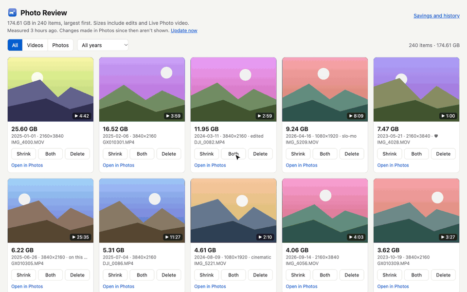

The demo uses stock photos with made-up names and sizes. In real use, your Mac asks you to confirm before anything is deleted.
Getting started takes about two minutes
Download it
Click Download for Mac. If you find a file called PhotoReview.zip in your Downloads folder, double-click it to unpack the app.
Open it
Drag Photo Review into your Applications folder and double-click it. Your Mac will ask whether you're sure, because it came from the internet. Choose Open.
Allow access to Photos
Choose Allow Full Access when asked. Your web browser then opens with your biggest photos and videos at the top. The first look takes a minute or two.
Before a large batch, check how to manage your Mac's Photos library size. Shrinking downloads full-quality originals, so leave room for them.
Keep your Mac's Photos library manageable
Your Photos library can grow while videos are being shrunk. Photos downloads the full-quality originals from iCloud, then Photo Review adds the smaller copies alongside them. The app clears its own temporary files, but Photos manages the downloaded originals.
Before a large batch
In Photos → Settings → iCloud, select Optimize Mac Storage if you use iCloud Photos. Photos can keep smaller local versions when space is limited; it doesn't immediately clear recent downloads.
Work in smaller batches if disk space is tight. Downloads can accumulate, and Both or Delete each original asks to delete originals only when the whole queue has finished.
Reclaim space after a batch
- Watch each smaller copy and check its picture, sound and full length. Confirm it has uploaded to iCloud. Keep a separate backup if you may want the original quality later.
- Use Delete original, or approve the batch's deletion request. The replaced originals move to Recently Deleted.
- Open Recently Deleted in Photos on your Mac or at iCloud.com/photos. Select only those replaced originals, choose Delete and confirm.
- Let Photos sync and clean up. This can substantially reduce the local library size, although space may not return immediately.
Permanent deletion removes those originals from iCloud and all devices using iCloud Photos, and ends the 30-day recovery option. The smaller copies remain as separate items. Avoid Delete All unless you intend to remove everything in Recently Deleted.
Photo Review does not empty Recently Deleted for you. Originals you keep in the main library stay under Photos' storage management. The Savings page tracks library changes, rather than measuring your Mac's free disk space.
Apple's guides: Optimize Mac Storage and delete and recover items on iCloud.com.
What you can do with it
Find the big ones
The Photos app can't sort by size. Photo Review can: every photo and video, largest first, with a preview so you know what you're looking at.
Shrink videos
Make a much smaller copy of a video and keep that instead. You choose how small. HDR videos stay HDR, and the date, place and albums come along. If you like, the app removes the original for you once the copy is in.
Delete what you don't need
Select and delete. Your Mac asks you to confirm, and deleted items wait in Recently Deleted for 30 days in case you change your mind.
See what you saved
A running total of the space you've freed, how much came from shrinking and how much from deleting, plus a list of everything you've shrunk or deleted.
25.6 GB → 855 MB
That's one real 4-minute 4K video from an iPhone, before and after shrinking. It is still 4K and still HDR.
Your photos stay yours
- It runs only on your Mac. Photo Review doesn't upload anything, and there is no account to create.
- Nothing is deleted without your say-so. Your Mac shows its own confirmation every time.
- Shrinking never changes the original. You get a smaller copy next to it, and the original stays until you decide to delete it, or ask the app to delete it once the copy is ready.
- Anyone can check how it works. The code is public and free to read.
Good to know before you start
- It's a new app. So far it has only been tested on its author's Mac, on the newest macOS. Watch a shrunk copy before you delete its original, and keep a backup of anything you couldn't bear to lose.
- Very large videos take a while. A video stored in iCloud has to be downloaded before it can be shrunk, and a 25 GB one can take an hour or more.
- Your Mac's library can grow during shrinking. Downloaded originals can remain on disk, including in Recently Deleted. Follow the storage guide to check your smaller copies and permanently remove only their replaced originals.
- A few details don't carry over to a shrunk copy: captions, keywords and the names of people in it.
Questions
Is it really free?
Yes. There are no ads, no accounts and nothing to buy.
Why does it open in my web browser?
The app shows its screen as a page in your browser. That page lives on your own Mac, at an address starting with 127.0.0.1, and isn't on the internet. Keep the small Photo Review window open while you use it.
Will this free up space on my iPhone too?
If iCloud Photos is turned on, yes. What you shrink or delete on your Mac changes on your iPhone and iPad as well, because they share one library.
My Mac says it can't open the app. What now?
Open System Settings, go to Privacy & Security, scroll down, and click Open Anyway next to Photo Review. The app is signed and checked by Apple, so this should be rare.
How do I quit or remove it?
Close the small Photo Review window to quit. To remove it, drag Photo Review from Applications to the Trash. Your photos are not affected.
Something went wrong, or I have an idea.
Please report it here. You need a free GitHub account to post.
Free · under 1 MB · macOS 13 or later